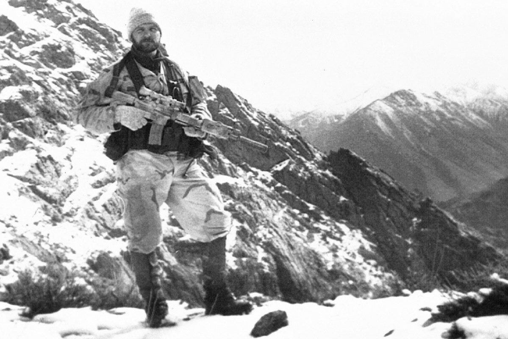
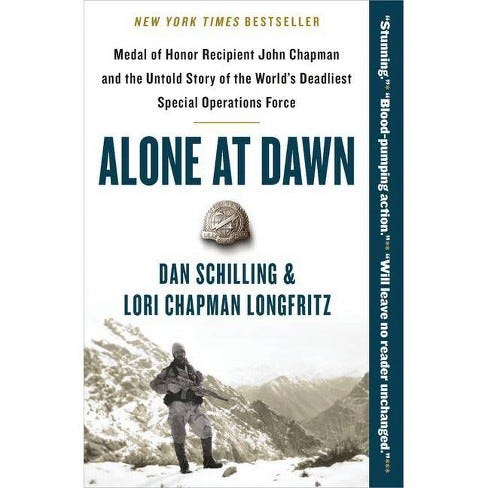

Alone CEO and Founder
because one of our people is there


Like MSgt John Chapman, I am leaving everybody behind and running toward the bunker I see right there in front of me.
I am leaving my leaders behind trying to be closer with the “ …..” but that’s what leading is all about allowing people to know when and how they can lead. Abandoning my plank, plank, fire tactics, and going straight towards the competitors' bunker because this bunker must be taken because one of our people is there waiting to be recovered.
Now I am in the bunker and fighting hand to hand with them. When you have those who believe in you in memory and those who would do everything to support you there is no time for thinking when it is time to provide back this support that they need.
The first bunker is taken not because of my bravery but mainly because of this empathy I have with my team and those I am defending.
Empathy is at the core of a qualified military engagement. That’s what I have learned in my short military secondary school, and this surprise ending did not stop me from learning more military science and thinking. Operational art and Army doctrine are fields forth studying because there is a special thing that a soldier has and this thing is empathy with those he or she protects. As CEO, I thought it was not possible to go without regurgitating this past military experience through book reading and great soldier speech and experience. The story of MSgt Chapman just made my heart cry because we could not have more tangible proof of bravery than the story of Chapman. If you are leading a team or running a startup, I highly recommend you to read this book
Alone at Dawn is one of the stories of those who give their life for something that they believe;
Waiting for these data-driven books that Book Dojo will publish there
I, CEO of Book Dojo highly recommend this one below
